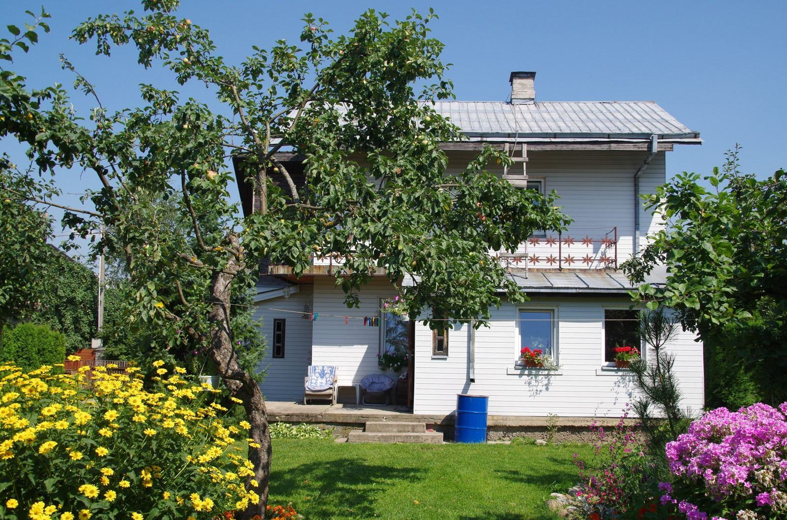

Referenser
Ett urval av uppdrag vi har utfört.
- 2026

Fryksände kyrka
1 100 m² koppar, nya spirbeslag och rännor tillverkade i verkstaden.
- 2025

Skoghalls lagerhall
Rullfalsad plåt på plats – 6 400 m² utan en enda tvärskarv.
- 2025

Brf Herrhagsparken
Fem lamellhus fick nytt falsat tak och takavvattning i grafitgrått.
- 2024

Sågverket i Edane
Fasadkassetter och sandwichtak på en ny torkhall.
- 2025

Säffle simhall
380 specialbeslag i tre kulörer levererade till en lokal takläggare på två veckor.
- 2026

Kristinehamns konsthall
Titanzink med vinkelfals på ny tillbyggnad – montage i maj 2027.
Takläggare som slutat bocka själva
Tobias H., takläggare · Arvika”Jag skickar måtten från taket på måndag morgon och har beslagen på torsdag. Det har gjort att jag slutat bocka själv helt.”
Linda K., fastighetschef · Hammarö”Lagerhallen fick plåtbanor på 42 meter utan skarv. Ingen annan i länet kunde erbjuda det.”
Bengt A., kyrkvärd · Torsby”Kyrkans gamla spirbeslag mättes upp och tillverkades på nytt i koppar. De passade på millimetern.”